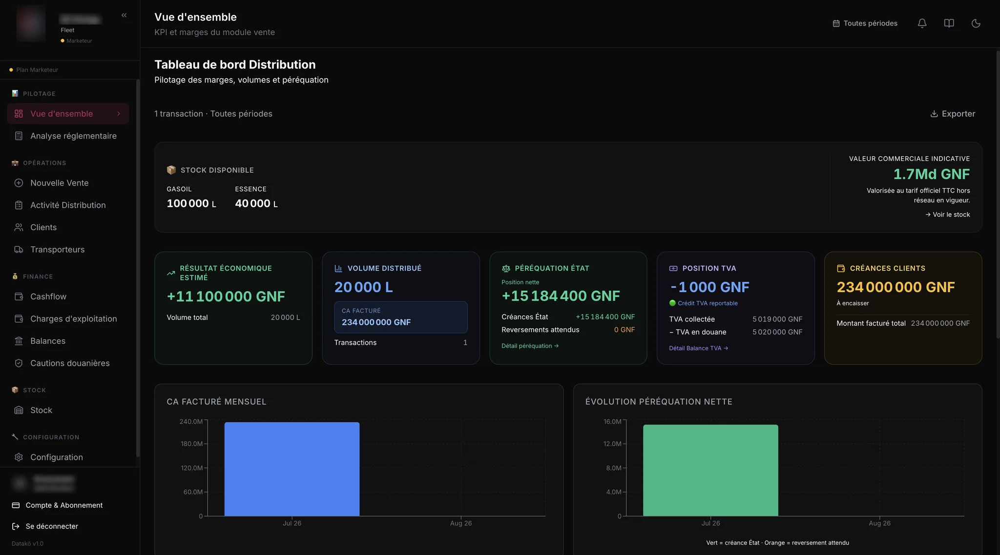

La plateforme Datakö
Des solutions métier pour piloter vos opérations et votre rentabilité.
Au-delà du conseil, Datakö édite des applications métier conçues pour le terrain. Nos solutions structurent vos opérations, suivent vos performances et vous redonnent le contrôle sur vos marges.
Moins de complexité, plus de visibilité, et des décisions prises au bon moment.


Encaissé aujourd'hui
47 640 000GNF
Crédits1 800 000
Charges200 000
Stock théorique
Cuve 1 · Gasoil33 160 L
Cuve Essence18 500 L
Relevé physique non mesuré.
Activité de la journée
Chiffre d'affaires48 000 000
Vendus à crédit1 800 000
Remboursés1 440 000
Dépenses du jour200 000